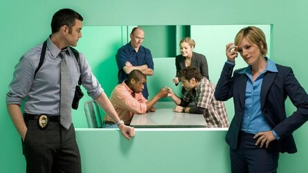
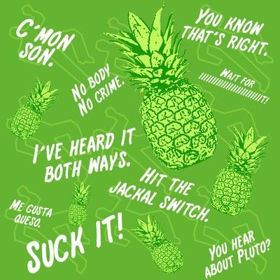

Tyler's Take on Psych
Summary
You've heard about Brooklyn 99, Law and Order, Criminal Minds, and Magnum P.I. Now get ready for easily the best crime show on TV, Psych. This is the show that dominated TV during its whole running, and rightfully so. The main character is named Shawn Spencer, played by James Roday Rodriguez, who solves crimes using his heightened observational skills and eidetic memory, a close cousin to the photographic one. But the show wouldn't be complete without someone to share Shawn's brain cell, that person is Burton “Gus” Guster, played by Dule Hill. His best friend from childhood, Shawn and Gus are the perfect representation of best friends, and to be totally fair, probably the best representation of best friends ever represented on TV. I try to model, much to the usual distaste of all my friends, their friendship. It strikes just the right balance of teasing, tom-foolery, and genuine care.
The best way to describe the character relationships in Psych is as a lovable family. Shawn and Gus are a pair of rowdy twins, Detective Juliet O'Hara, played by Maggie Lawson, is the protective and loving middle sister, and Carlton Lassiter(lovingly referred to as Lassie by Shawn), played by Timothy Omundson, is the strict older brother that wants things done by the book. The mother is Police Chief Karen Vick, played by Kirsten Nelson, and the cranky grandpa is Henry Spencer, played by Corbin Bernsen. Each of the characters compliment each other so well. Juliet goes along with Shawn and Gus's single brain cell just long enough to indulge them, but also knows when to put her foot down and get to business. This makes her an excellent in-between for Shawn and Lassiter. Although Lassiter and Shawn hate each other, they each have a certain type of respect for the other. Shawn is admirable of Lassie's dedication, and Lassie(alhough he hates to admit) admires Shawn's detective work. Chief Vick is the moral compass of the group always correcting Lassie or Shawn when they step out of line.
Psych starts with Shawn calling in a tip to the police station that is so good it could only come from the inside. In a desperate attempt to get out of prison, Shawn uses his ability to convince the SBPD that he is a psychic. He then enlists the help of Gus to do things including and certainly not limited to a solve supposed dinosaur attack, saving an American Idol rip-off show, rescuing a stolen mummy, starring in a telenovela, stopping a serial killer, and performing an exorcism.
Tyler's Take
Only a few shows influence the way I view the world, and I'm not talking about shows that make stupid political statements that cater to the loud SJW types. Each of the relationships in Psych is portrayed in the most human aspect possible, making it possible to find aspects of yourself in every single characters. They are honestly the best representations of relationships that I have ever seen in modern television. What makes it even better is how each character isn't just some sterotype, they feel like actual people. Right from the start it is super easy to
There are very few show that I will watch repeatedly. Psych is 100% one of those shows. Straight up, there hasn't been a single show that made me care more about the characters and laugh out loud repeatedly at the same episodes. There are so many different bits that are hidden in the show, like giving Gus random silly nicknames such as, “Schoonie U-Turn Singleton”, “Methuselah Honeysuckle”, “Ghee Buttersnaps”, to the appearance of a pineapple in almost every episode to certain words that become a running joke(see right). This show is more entertaining than a series of Biden Gaffes. Psych boasts a series of A-lister guest stars including and certainly not limited to. Ally Sheedy, Val Kilmer, Judd Nelson, John Cena, Kenan Thompson, Cary Elwes, William Shatner, and Corbin Bleu.
I rate this show a, wait of iiiiiiiit, 69 out of 10 pineapples. This show is so good that it even inspired a rip-off show called The Mentalist with the same plot, fake psychic is hired by police to solve crimes. What makes this show so spectacular, in my opinion, is how the actors care about each other, on and off the screen. When Timothy Omundson had his stroke in 2017, right before the filming of the first of three psych movies, Steve Franks (creator) and James Roday Rodriguez(Shawn) rewrote the entire script to make sure that Tim was involved. Not to mention the fact that James and Maggie Lawson, who plays Juliet O'Hara, were in a romantic relationship throughout the entirety of filming, and continue to work together on their animal charity, The Tiger Frances Foundation. There are very few shows that have a group of actors this close as Psych, and not only that, but they all welcome their fans with open arms and love them almost as much as their fans love the show. They even honored one of their fan's, Christina Grimmie, at the end of their first movie. All in all, this is one of the best shows out there. Highly recommend.